RFID Asset Tracking - Tags, Audits and Reader API
RFID asset tracking on maintenance equipment: tag assets, track location and holder, audit rooms with a handheld reader, connect readers over a REST API.
- Price
- $129
- Odoo versions
- 17.0
- 18.0
- 19.0
- 20.0
- Technical name
tamadoo_rfid_asset- License
- OPL-1

Text and screenshots below are from the Odoo 20.0 version of this module.
Put RFID tags on the equipment you manage in Odoo Maintenance, track its location and who holds it, audit any room with a handheld reader and see at once what is missing, misplaced or unknown.
Scan a room, get the answer
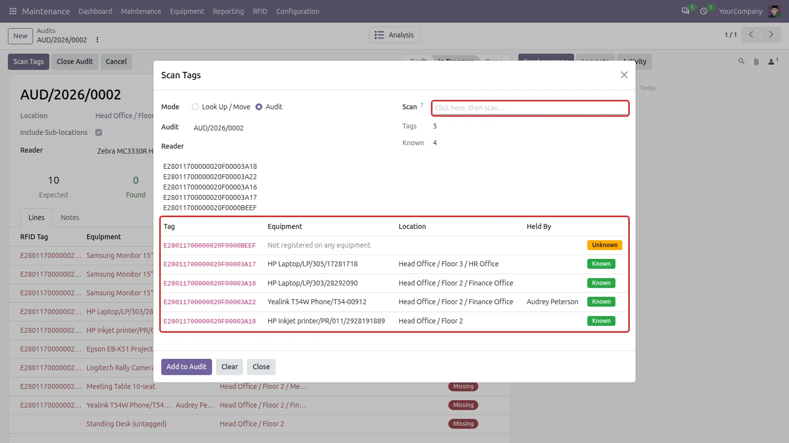
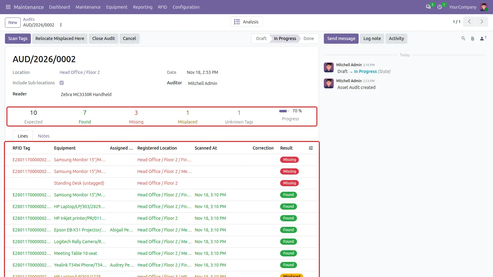
What you get
RFID on your equipment
Built on Odoo Maintenance equipment: no second asset register. Tags normalised (no spaces, upper case) and unique per company.
Asset locations
Tree of sites, floors and rooms with codes and GPS. Search equipment by location including sub-locations.
Location audits
Expected vs scanned: found, missing, misplaced and unknown tags, with progress and one-click relocation.
Movements
Location and custodian changes with a full history, from the form, the scan screen, an audit or a reader.
Reader REST API
JSON API with a key per reader. A scan goes into the open audit assigned to that reader.
Labels
QR + barcode asset labels to print on A4 sheets.
Step by step
Your equipment, tagged
Every equipment of Odoo Maintenance gets an RFID tag and an asset location. Filter untagged equipment, group by location.
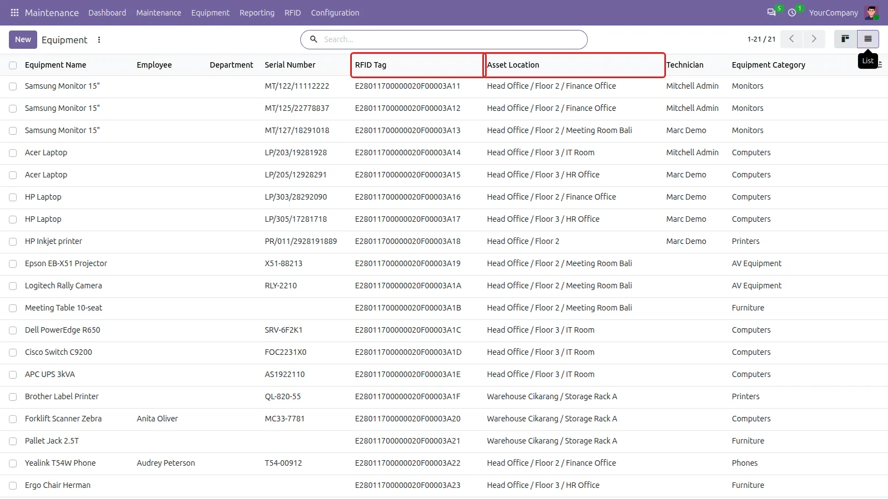
On the equipment
Tag (EPC, unique per company), asset location, Move and Print Label buttons, and a Movements smart button.
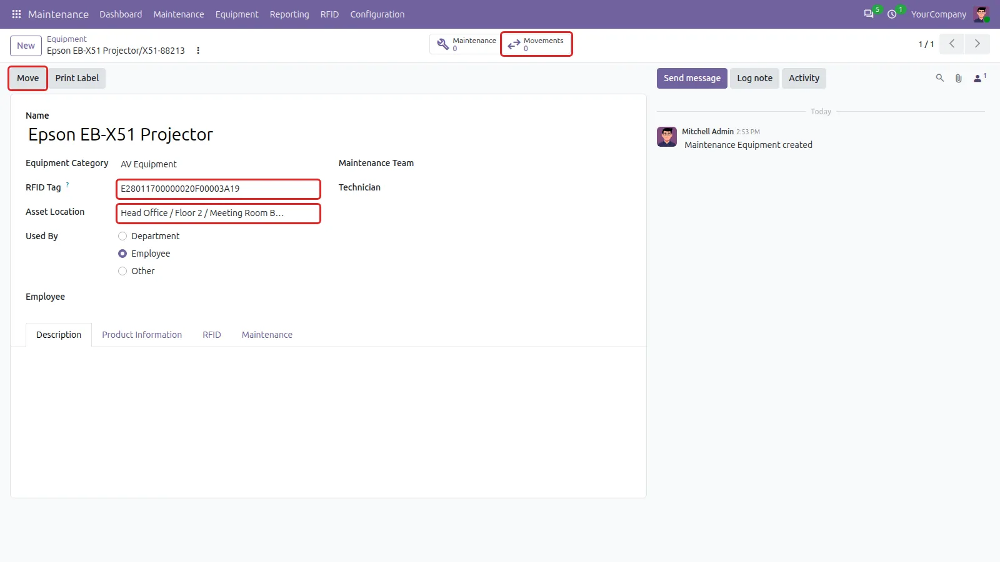
Move in one step
Pick a new location and/or employee: the equipment and its Maintenance assignment are updated and the move is logged.
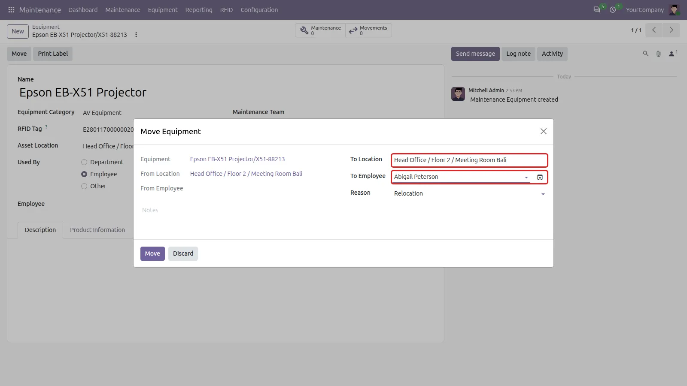
Full history
Every movement with origin, destination, reason and reader. Last scan time and reader are kept on the equipment.
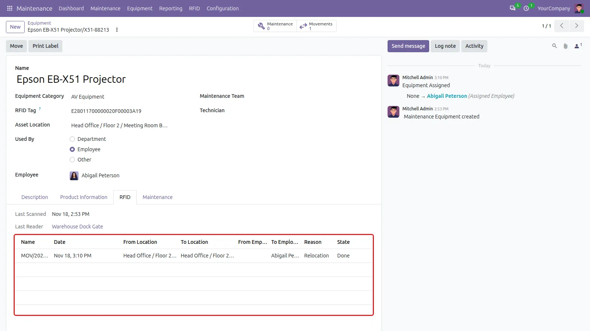
Audit a location with a reader
Start an audit, click Scan and pull the trigger: a USB / Bluetooth keyboard-wedge reader types each tag. Each one is identified straight away.

Found, missing, misplaced, unknown
Expected equipment is compared with what was scanned, by you and by readers through the API. Progress at a glance.

Fix the register in one click
Relocate Misplaced Here moves every equipment found in the wrong place, with a correction movement linked to the audit.
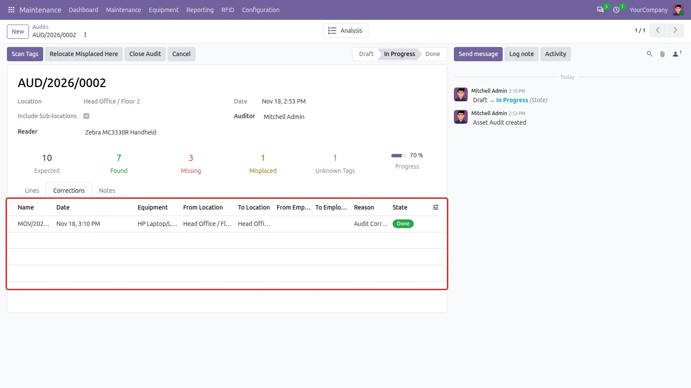
Audit analysis
Results per equipment category, filter missing equipment or unknown tags, export to Excel.
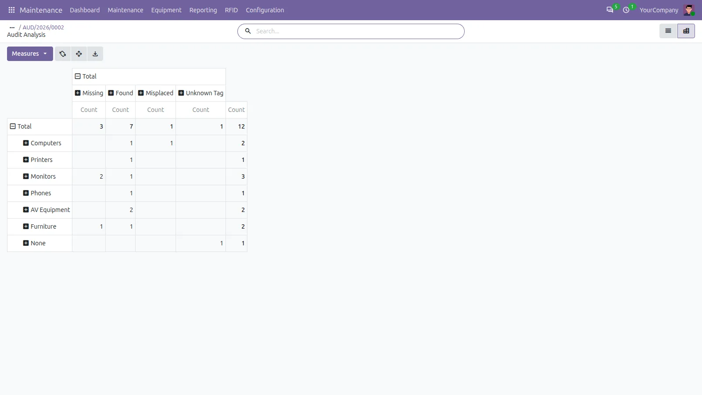
All audits
Missing and misplaced counts and progress per audit and location.
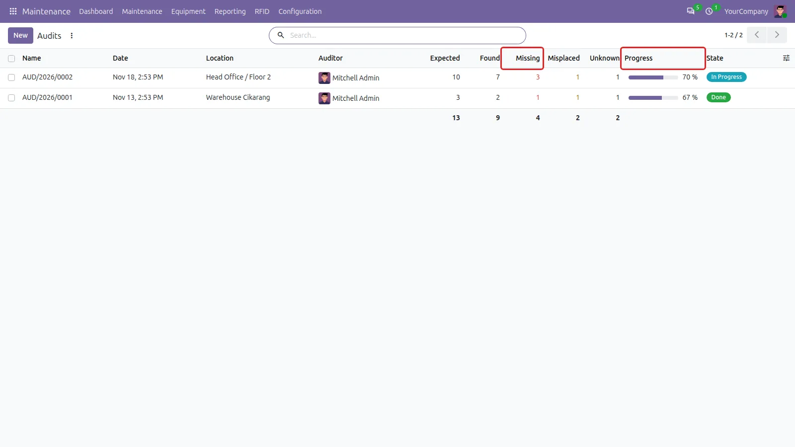
Scan screen
Scan any tags to see what they are, where they belong and who holds them, then open them or move them all at once.
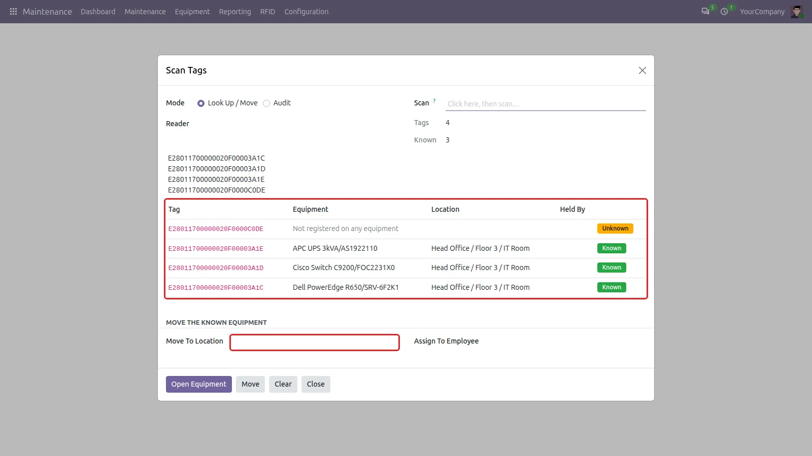
Asset locations
Sites, floors and rooms in a tree, with short codes for readers and GPS coordinates.
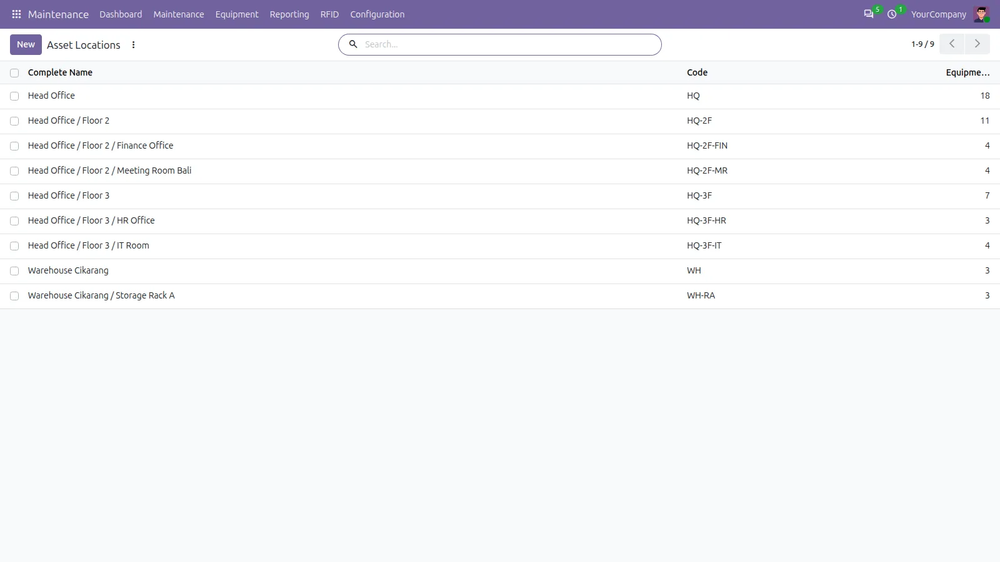
Readers with their own API key
Each handheld or gate reader gets its own key, shown once and stored only as a fingerprint. Regenerate or revoke at any time.
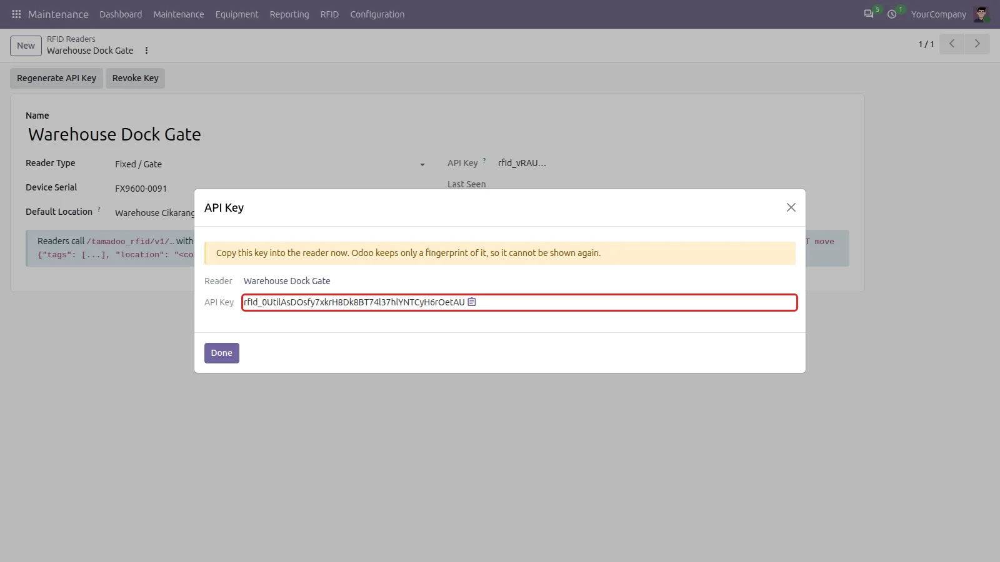
REST API for readers
ping, look up a tag, send a batch of scans into an audit, move equipment to a location or an employee badge.
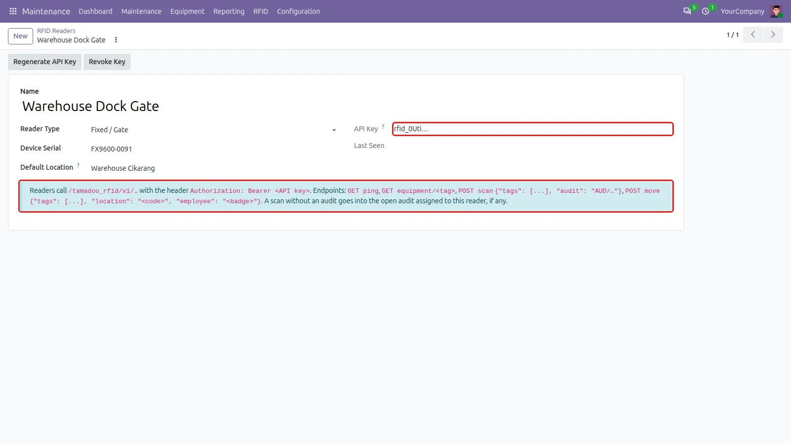
Asset labels
QR code and barcode labels, three per row on A4, from the equipment list or form.
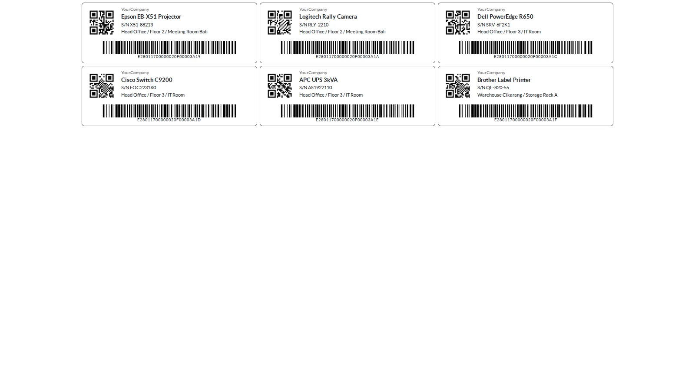
Reader API
GET /tamadoo_rfid/v1/ping
GET /tamadoo_rfid/v1/equipment/<tag>
POST /tamadoo_rfid/v1/scan {"tags": ["E2801170...", ...], "audit": "AUD/2026/0002"}
POST /tamadoo_rfid/v1/move {"tags": [...], "location": "HQ-2F-MR", "employee": "BADGE42"}
Header: Authorization: Bearer <reader API key>
Set up in 5 minutes
- Maintenance → Configuration → Asset Locations: create your sites, floors and rooms.
- Scan or type the tag on each equipment (field RFID Tag) and set its location. Print labels if you need them.
- Desktop / handheld in keyboard mode: Maintenance → RFID → Scan Tags. Readers with their own app: Configuration → RFID Readers → Generate API Key.
- RFID → Audits: pick a location, Start Audit, scan.
Requirements: Odoo 20.0, depends on hr_maintenance (Maintenance + Employees, both in Community).
Works with any UHF / HF / NFC reader that types the tag as keyboard input, or that can send HTTP requests.
The QR code and barcode on the asset labels are drawn by reportlab and need its PNG backend: Odoo's Debian/Ubuntu packages include it, on a pip-based Linux install run pip install rl-renderPM (Odoo's requirements.txt lists it for Windows only), otherwise the label codes show as broken images.
Get RFID Asset Tracking
Questions before buying? Write to tama.odoo@gmail.com.